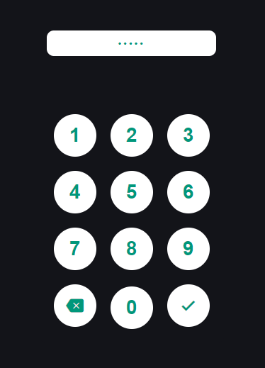
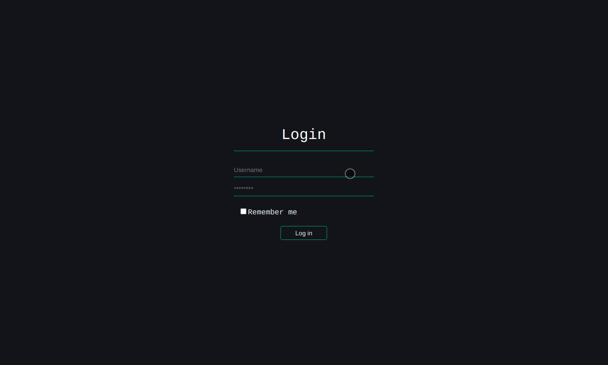
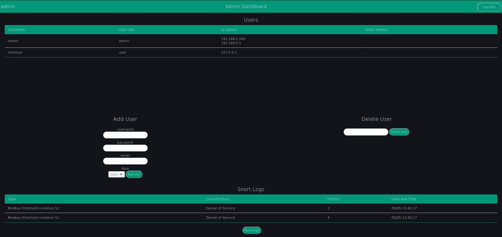

5. Webapplikation Backend¶
5.1. Einleitung¶
Unsere Aufgabe war es die Web-Applikation des LICSTER zu verbessern.
Konkret haben wir das Frontent für mehrere Geräte zugänglich gemacht und das Backend um eine Benutzerverwaltung erweitert. Des weiteren haben wir ein PIN-Feld für das HMI programmiert, die Datenbank der Benutzerverwaltung von der Kommandozeile aufsetzbar gemacht und die Logs des IDS zeigen wir nicht nur auf dem Admin Dashboard an, sondern benachrichtigen Admins auch über Breaches per Email. Ein WSGI (Web Server Gateway Interface) wurde implementiert, um die Einbindung eines Web Servers für Endbenutzer zu vereinfachen.
5.2. Anfangsstand¶
Die Flask Applikation der ersten LICSTER Gruppe war ein abgeschlossenes System, welches nur zur Benutzung auf dem HMI konzipiert war. Sie zeigt den Stand aller Servomotoren an, kann Orders anzeigen und plazieren und Motoren einzeln ansteuern.
Sie in einem Unternehmensnetzwerk laufen zu lassen wäre ein Sicherheitsrisiko gewesen, da jeder die Motoren bedienen konnte. Des weiteren würde es Anzeigeprobleme geben, da die Web Applikation nur für einen Bildschirm - den des HMI - programmiert wurde.
Im Folgenden präsentieren wir unsere Veränderungen und Erweiterungen.
5.3. Veränderungen¶
5.3.1. Modularer Aufbau¶
Die bestehende Webapp war eine Standart Flask App. Da wir sowohl eine Datenbank als auch Wege zum Administrieren und Einloggen hinzufügen wollten, haben wir uns dazu entschlossen der Flask App einen Modularen Aufbau zu geben. Dieser Aufbau wird es auch zukünftigen Gruppen erleichtern sich in die App einzuarbeiten und neue Funktionalitäten hinzuzufügen.
Flask - im Gegensatz zu anderen populären Frameworks wie z.B. Django hat keinen vorgegebenen Applikationsaufbau. Daher kann man wie folgt eine funktionsfähige Flask Web Applikation schreiben, die (sobald die app mit flask run gestartet wurde) unter localhost:5000/ „Hello World!“ anzeigt.
app.py
from flask import Flask
app = Flask(__name__)
@app.route("/")
def hello():
return "Hello World!"
if __name__ == "__main__":
app.run()
Mit jeder hinzugefügten Route wird dieses File allerdings unübersichtlicher, weswegen es sich anbietet die App in verschiede Files aufzugliedern. Wir haben uns dafür entschieden die Flask Applikation wie folgt aufzugliedern:
app/ # Alles was direkt mit dem Ablauf der App zu tun hat
app/__init__.py # Die Application Factory
app/admins.py # Alle Administrationsteile der Applikation
app/auths.py # Alle Authentifikationsteile der Applikation
app/db.py # Das Handling der Datenbankverbindung
app/forms.py # Das Handling aller Forms
app/views.py # Alle Routen zur Bedienung des LICSTER
app/templates/ # Alle HTML Templates der App
app/static/ # Die CSS, JavaScript, JQuery und Bootstrap Dateien der App
wsgi.py # Wird benötigt, um die App mit einem WSGI zu starten
admins.py, auths.py und views.py sind als Blueprints aufgebaut. Diese Blueprints werden in der main bzw create_app Funktion registriert. Danach funktionieren die Routen der einzelnen Files genauso wie die Routen eines app.py Files.
5.3.2. Application Factory¶
Eine Application Factory ist eine Funktion, die das globale App Object generiert und zurückgibt. Dies hat verschiedene Vorteile, z.B. ermöglicht es eine einfache Implementierung eines WSGI, das Testen mit verschiedenen globalen Konfigurationen und das einfache Hinzufügen von eigenen CLI Befehlen.
Zur Implementierung der Application Faktory haben wir den Startpunkt der App aus app.py in app/__init__ verlegt. Der Startpunkt ist nun die Funktion create_app(), welche als erstes eine Flask App kreiert, sie dann konfiguriert und als letztes alle Blueprints registriert, bevor sie die App zurückgibt.
5.3.3. Design¶
Für das Design haben wir uns zusammengesetzt und beschlossen dass ein schlichteres Design ohne viele visuelle Features besser ist. Es handelt sich nämlich um ein IT-Sicherheits-Projekt bei dem natürlich die Sicherheit des Systems an erster Stelle steht und es seriös wirken soll.
Für das PIN-Feld wurde eine JavaScript Klasse erstellt, welche für die Anzeige der Tasten und das Handling von Eingaben zuständig ist. Diese Anzeige ist nicht für mehrere Geräte angelegt sondern direkt auf das HMI angepasst.
Die normale Anmeldeseite wurde so realisiert, dass sie auf allen Geräten gut verwendet werden kann.
5.4. Erweiterungen¶
Als zwei Große Erweiterungen wurden das Benutzerverwaltungssytem und der Auswertung und Anzeige der IDS Logs zur Web Applikation hinzugefügt.
Im Benutzerverwaltungssytem gibt es drei Rollen, Admins, Users und nicht angemeldete Personen. Nicht angemeldete Personen haben die Möglichkeit die Startseite der Webapplikation zu besuchen. Andere Webseiten können sie allerdings nicht besuchen, da dies ein Sicherheitsrisiko wäre.
Angemeldete Benutzer können LICSTER wie zuvor auf dem Bildschirm des HMI nun über jedes Gerät, welches ihnen zur Verfügung steht bedienen.
Die dritte Rolle des Benutzverwaltungssystems erlaubt den Zugriff auf das Administratoren Dashboard, wo Benutzer hinzugefügt und gelöscht werden. Hier werden außerdem alle Nutzer tabellarisch angezeigt. Des Weiteren werden tabellarisch IDS Logs auf dem Dashboard angezeigt, falls der Benutzer dies aktiviert hat und bei Hinzufügen einer Email-Adressse zu einem Admin Account wird der Benutzer über Breaches direkt per Email benachrichtigt.
Das Styling der Admin Dashboard-Ansicht wurde mithilfe von HTML und CSS (Cascade Style Sheets) verwirklicht. Hierbei haben wir beschlossen das alle Funktionen auf einer einzigen Seite sind, damit es übersichtlich bleibt und die Bedienung schneller ist.
Zusätzlich gibt noch eine Reset-Funktion mit der man alle snort Einträge aus der Datenbank löschen kann.
5.4.1. Datenbank¶
Zur Speicherung der Benutzer, IP Adressen und IDS Logs haben wir eine SQLite Datenbank verwendet, da diese nicht viel Platz braucht und kein Datenbankverwaltungssystem braucht.
Um die Datenbank schnell aufsetzen zu können und das Passwort fürs HMI schnell verändern zu können wurden die Shortcuts flask init-db und flask change-hmi-password implementiert. Wir haben uns gegen Standart Benutzeraccounts und Passwörter entschieden, da diese ein Sicherheitsrisiko darstellen könnten und man die Datenbank normalerweise nur ein einziges Mal aufsetzen muss.
Das Passwort wird beim Erstellen eines Benutzers mit der generate_password_hash Methode von Werkzeug gehasht, der gehashte Wert wird dann gespeichert. Beim Login wird die check_password_hash Methode von Werkzeug verwendet. Wir haben uns gegen die Implementierung eines Salts entschieden, da es uns unsinnig erschien die Datenbank gegen Rainbow Table Attacks zu schützen.
5.4.2. Formen¶
Um CSRF-Attacken, insbesondere Session-Riding Attacken zu verhinden, bei denen Daten mithilfe einer gültigen Sitzung des Opfers manipuliert werden, haben wir für alle Formen FlaskForms verwendet. Dies ist eine im Paket WTForms enthaltene Klasse, welche resistent gegen CSRF-Attacken ist. Jede Subklasse von FlaskForms integriert Tokens in die HTML Formen und überprüft die in der zurückgeschickten Form enthaltenen Tokens mithilfe der validate_on_submit Methode automatisch.
5.4.3. Authentication¶
Für alle Routen, die zum An- und Abmelden von Benutzern gehören haben wir das auths Blueprint hinzugefügt.
Die Login-Route überprüft über die validate_on_submit Methode aller FlaskForms, ob eine valide Form gepostet wurde und falls dies nicht der Fall ist wird dem Benutzer eine Form geschickt. Basierend auf die IP Adresse wird dem Benutzer entweder HTML Seite des HMI oder die normale Login Seite geschickt.
Wenn die validate_on_submit Methode True zurückgibt, wird überprüft wer der Benutzer ist. Danach erfolgt ein Passwortabgleich. Falls dieser auch erfolgreich ist wird der Session eine Variable mit der Benutzerrolle hinzugefügt. Falls sich der Benutzer zum ersten Mal anmeldet, wird er nun weitergeleitet zum Passwort setzen. Andernfalls werden normale Benutzer (also auch HMI Benutzer) zur Startseite weitergeleitet und Administratoren zum Dashboard.
Die Route zum Paswswort überprüft genauso wie die Login Route über die validate_on_submit Methode, ob eine valide Form gepostet wurde und falls dies nicht der Fall ist wird dem Benutzer eine Form geschickt. Wenn der Benutzer ein Passwort eingibt, ersetzt der Hash dieses Passworts den bisherigen Hash in der Datenbank und das Feld für first_login wird auf False bzw. 0 gesetzt.
5.4.4. Administration¶
Für alle Routen, die zur Benutzeradministration gehören haben wir das admins Blueprint hinzugefügt.
Das Admin Dashboard gibt den Administratoren einen Überblick über alle vorhandenen User und alle vorhandenen Logs. Des weiteren gibt es einen Button zum Zurücksetzen der Snort Logs.
Auf dem Admin Dashboard gibt es drei Formen. Die erste Form ist zum Erstellen von Usern. Der Admin muss einen Benutzernamen, ein Passwort und eine Benutzerrolle vergeben. Falls die Benutzerrolle Admin ist, so kann er diesem Benutzer auch eine Email Adresse zuweisen. Zum Löschen eines Benutzers muss der Admin einfach den Benutzernamen in die zweite Form eingeben und auf Löschen klicken. Die letzte Form ist zum Löschen von den Snort Logs.
5.4.5. IDS Implementation¶
Zusammen mit dem IDS-Team haben wir an einer Lösung gearbeitet um den Administratoren Zugang zu den Logs zu geben. Dazu haben wir einen Log-Reader geschrieben, welcher die vom IDS übermittelten Logs auf Veränderungen überprüft und neue Daten in die Datenbank einträgt. Auf dem Admin-Dashboard werden diese in einer Tabelle angezeigt. Des Weiteren werden Admins - sofern sie sich mit einer Email-Adresse registriert haben - direkt über Sicherheitsverstöße informiert. Die IDS Implementierung ist eine optionale Funktion.
[**] [1:1001005:0] Modbus threshold violation 52 [**]
[Classification: Attempted Denial of Service] [Priority: 2]
05/05-13:42:01.732170 192.168.0.30:46084 -> 192.168.0.52:502
TCP TTL:64 TOS:0x10 ID:48012 IpLen:20 DgmLen:40 DF
***A**** Seq: 0x14371674 Ack: 0x3ED77 Win: 0x7210 TcpLen: 20
Ein Snort Log Eintrag hat den oben abgebildeten Aufbau. Um auf den Dashboard nur relevante Daten anzuzeigen, filtern wir den Typ, die Klassifikation, die Priorität und den Zeitpunkt aus den Log Einträgen.
db = get_db()
last_row = db.execute('SELECT * FROM snort WHERE id = (SELECT MAX(id) FROM snort)').fetchone()
if (last_row is None) or (last_row[1] != Type or last_row[2] != Classification or last_row[3] != Priority):
db.execute('INSERT INTO snort (snort_type, snort_classification, snort_priority, snort_datetime) VALUES (?,?,?,?)', (Type, Classification, Priority, Datetime))
db.commit()
Um Platz in der Datenbank zu sparen und die Email Accounts nicht mit gleichen Warnungen zu überfluten, haben wir uns dazu entschlossen nur neue Logs in der Datenbank zu speichern. Dazu überprüfen wir ob entweder die Datenbank Tabelle leer ist oder der Typ, die Klassifikation oder die Priorität des Logs sich verändert hat. Nur wenn einer der beiden Fälle eintritt, wird ein neuer Eintrag abgespeichert und eine Email versendet.
5.4.6. Warnungen per Mail¶
Wenn das Intrusion Detection System Verstöße entdeckt, wird eine Email an alle Administratoren mit einer eingetragenen Email verschickt. Dies wurde mithilfe des smtplib Pakets realisiert. Als Absender haben wir eine dafür dedizierte Email-Adresse verwendet. Diese sensiblen Daten sollten logischerweise nach dem Entwicklungsstadium durch Umgebungsvariablen ausgetauscht werden, da dies ansonsten ein Sicherheitsrisiko darstellen würde.
smtp.login('licster.breach@gmail.com', 'Lic#v77zX')
5.4.7. WSGI¶
Um die leichte Einbindung in einen Server wie nginx zu gewährtleisten, haben wir uns dazu entschlossen ein WSGI einzubinden. Wir haben Gunicorn ausgewählt und ein wsgi.py File erstellt, welches mit der create_app Funktion eine App kreiert und dann startet.
5.5. Fazit und Ausblick¶
5.5.1. Fazit¶
LICSTER zu verbessern war ein interessantes und forderndes Projekt. Wir mussten uns mit dem Framework Flask auseinandersetzen und in ein bestehendes Projekt einarbeiten. Es hat jedoch auch Spaß gemacht ein bestehendes Projekt durch eigene Funktionalitäten erweitern zu können. Wir haben die Web Applikation geräteübergreifend zugänglich gemacht und ein Benutzerverwaltungssystem hinzugefügt.
5.5.2. Ausblick¶
Bisher läuft die Server-Client Kommunikation über HTTP. Dies stellt ein Sicherheitsrisiko dar, da Benutzernamen und Passwörter unverschlüsselt über das Netz übertragen werden. Es ist möglich, HTTPS mithilfe von Self-Signed Certificates zu implementieren. Eine Anleitung hierzu kann unter https://gist.github.com/fntlnz/cf14feb5a46b2eda428e000157447309 gefunden werden. Google Chrome hat spezifische Anforderungen an die Zertifikate, welche Probleme verursachen können. Ein Thread zu diesem Problem kann unter https://github.com/webpack/webpack-dev-server/issues/854 gefunden werden.
Aktuell werden Admins via Email unverzüglich über Sicherheitsverstöße benachrichtigt, das Selbe gilt allerdings nicht für das Admin Dashboard. Eine hilfreiche Erweiterung wäre die Implementierung einer Threadlevel Anzeige auf dem Admin Dashboard. Diese sollte automatisch das Sicherheitslevel updaten. Realisiert werden könnte dies z.B. durch eine Socket-Verbindung zwischen der Web Applikation und den Clients. Eine Anleitung zum Implementieren einer Socket-Verbindung kann unter dem folgenden Link gefunden werden: https://www.includehelp.com/python/implementation-of-websocket-using-flask-socket-io-in-python.aspx